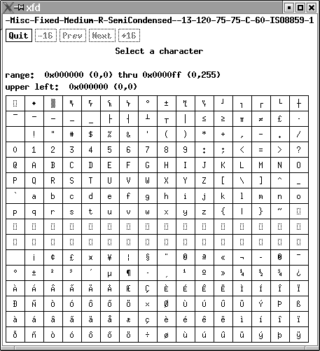
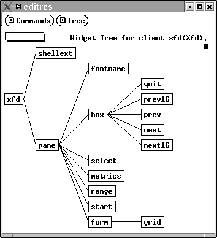

Les ressources permettent de spécifier les préférences de l'utilisateur pour certaines applications X.
Les ressources ne sont plus utilisées par les environnements intégrés comme KDE ou Gnome puisqu'ils intègrent d'autres mécanismes de préférences gérés par des interfaces plus conviviales. Elles peuvent néanmoins encore être utiles pour des applications étrangères à ces environnements comme emacs, xfig, gv ou xdvi.
Voici quelques exemples de ressources qui peuvent se trouver dans le fichier .Xdefaults.
xterm*scrollbar: true emacs*Background: wheat emacs.Background: FloralWhite emacs.Foreground: Black emacs*Foreground: Black emacs.Geometry: 80x100+0+0 emacs.BitmapIcon: on emacs.font: -adobe-courier-medium-r-normal--*-120-*-*-m-*-iso8859-1 gv.reverseScrolling: true
Les valeurs données aux ressources dans les fichiers ou avec l'option -xrm sont écrites avec la syntaxe name : value où name et value sont respectivement le nom de la ressource et sa nouvelle valeur.
Le nom de la ressource est décrit par une suite de composants (Widget) séparés par le caractère '.' (point). Le premier composant est par convention le nom de l'application. Chaque composant est donné par un nom de classe commençant par une majuscule comme Button ou par son nom comme help. Cette suite de noms de composants doit correspondre à la hiérarchie de composants utilisée par l'application. Celle-ci est en général décrite dans le manuel (man) de l'application comme pour xterm.
Un seul nom de composant peut être remplacé par le caractère '?' et plusieurs ou zéro noms de composants peuvent être remplacés par le caractère '*'. Dans le cas ou plusieurs couples name:value correspondent à une ressource, c'est toujours le nom le plus précis qui a priorité. Le principe est qu'un nom de composant a priorité sur un nom de classe, qui a priorité sur un nom donné par '?' et qui a encore priorité sur nom donné par '*'.
Par exemple, la ressource xfd.pane.?.background: red est équivalente aux ressources suivantes (pour la hiérarchie de Widgets de l'application xfd, cf. le paragraphe Expérimentations).
xfd.pane.fontname.background: red xfd.pane.box.background: red xfd.pane.metrics.background: red xfd.pane.range.background: red xfd.pane.start.background: red xfd.pane.form.background: red
La ressource xfd.pane.*.background: red comprend toutes les ressources précédentes mais aussi les ressources suivantes.
xfd.pane.background: red xfd.pane.box.quit.background: red xfd.pane.box.prev16.background: red xfd.pane.box.prev.background: red xfd.pane.box.next.background: red xfd.pane.box.next16.background: red xfd.pane.form.grid.background: red
Les ressources peuvent être spécifiées à ces différents endroits par ordre croissant de priorité.
Il faut mettre dans le serveur les ressources qui doivent être utilisées par tous les clients quelque soit la machine sur laquelle il tourne. Ceci peut être fait par une commande xrdb -load .Xresources placée dans le fichier de démarrage .Xsession.
Le serveur X contient une petite base de données de ressources qui est répartie entre deux propriétés. Les ressources communes à tous les écrans sont stockées dans la propriété RESOURCE_MANAGER de la fenêtre racine du premier écran. Les ressources spécifiques à chaque écran sont stockées dans la propriété SCREEN_RESOURCES de la fenêtre racine de chaque écran.
Cette base de données est manipulée par le client xrdb qui a les principales options suivantes
Des fichiers propres à chaque application peuvent contenir des ressources. Ces fichiers doivent se trouver dans le répertoire donné par la variable XAPPLRESDIR ou dans des répertoires contenus dans les chemins (paths en anglais) des variables XUSERFILESEARCHPATH et XFILESEARCHPATH. Le répertoire par défaut est souvent /usr/X11R6/lib/X11/app-defaults/
Un fichier contenant des ressources destinées à toutes les applications peut être donné par la variable XENVIRONMENT. Si cette variable n'est pas définie, ce sont des fichiers de nom $HOME/.Xdefaults-hostname où hostname est le nom de la machine ou éventuellement un fichier de nom $HOME/.Xdefaults qui sont lus par les applications pour trouver des ressources.
Les ressources peuvent être données sur la ligne de commande en utilisant des options spécifiques lorsque elles existent ou l'option générale -xrm suivie d'une chaîne décrivant la valeur d'une ressource. L'option -xrm peut être utilisée plusieurs fois pour donner plusieurs ressources.
xterm -fn fixed -bg black -fg white & xterm -xrm "XTerm*scrollBar:on" &
Lancer un client xfd qui permet de visualiser les caractères d'une fonte. Lancer ensuite un client editres qui permet entre autres d'afficher les Widgets d'un client X qui accepte le protocole d'édition de ressources.
xfd -fn fixed & editres &
Utiliser ensuite la commande Get Tree de editres pour récupérer l'arborescence de Widgets du client xfd en cliquant dessus.
 
On comprend alors les effets des commandes suivantes.
xfd -xrm "xfd.pane.box*Background:red" -fn fixed & xfd -xrm "xfd.pane.box.quit.background:red" -fn fixed &
Mettre les ressources suivantes dans un fichier xfdres.txt puis les charger dans le serveur X avec la commande xrdb -merge xfdres.txt. Lancer ensuite un client xfd pour constater les changements d'affichage.
xfd*Background: wheat xfd.pane.box.background: black xfd.pane.box*Background: yellow xfd.pane.box.Command.Background: blue xfd.pane.box.quit.Background: red